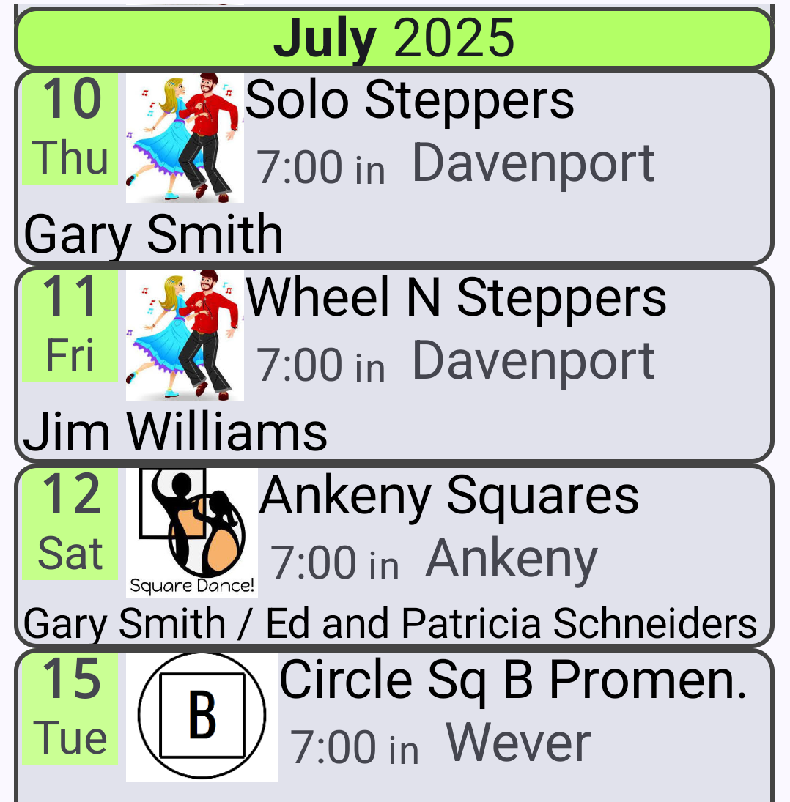
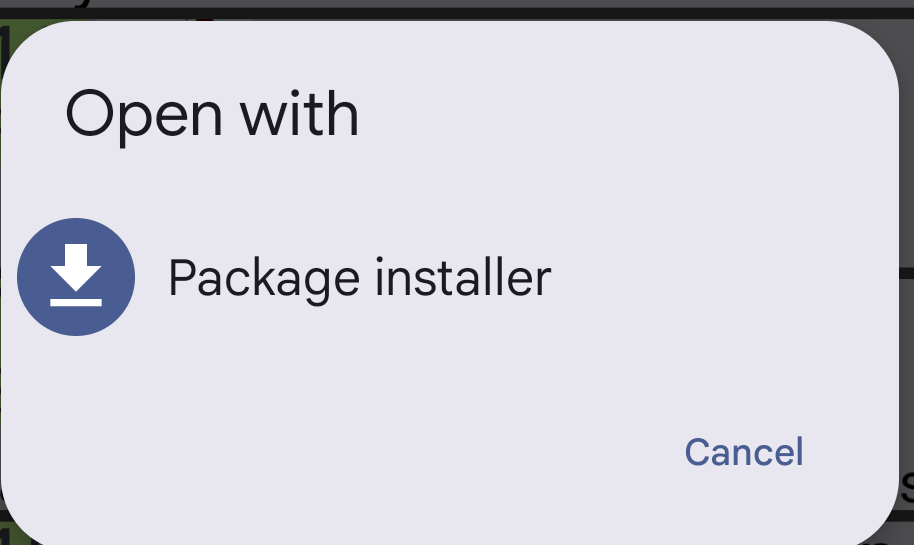
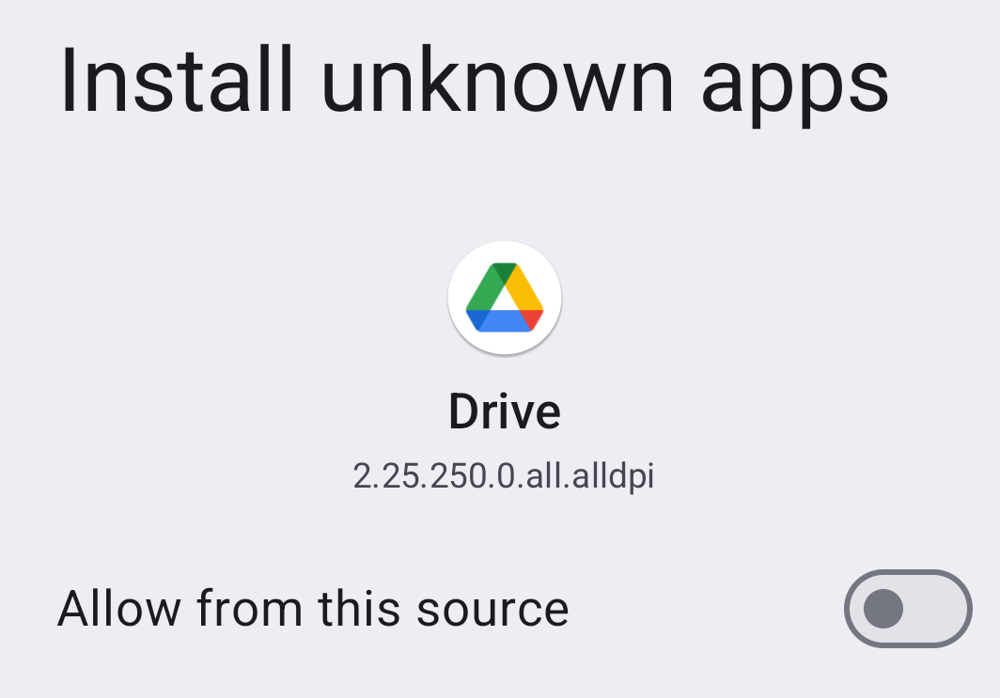
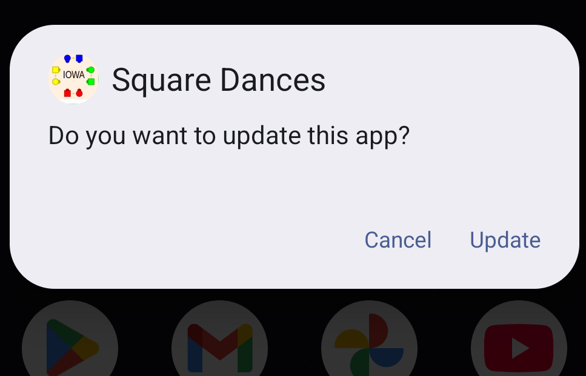
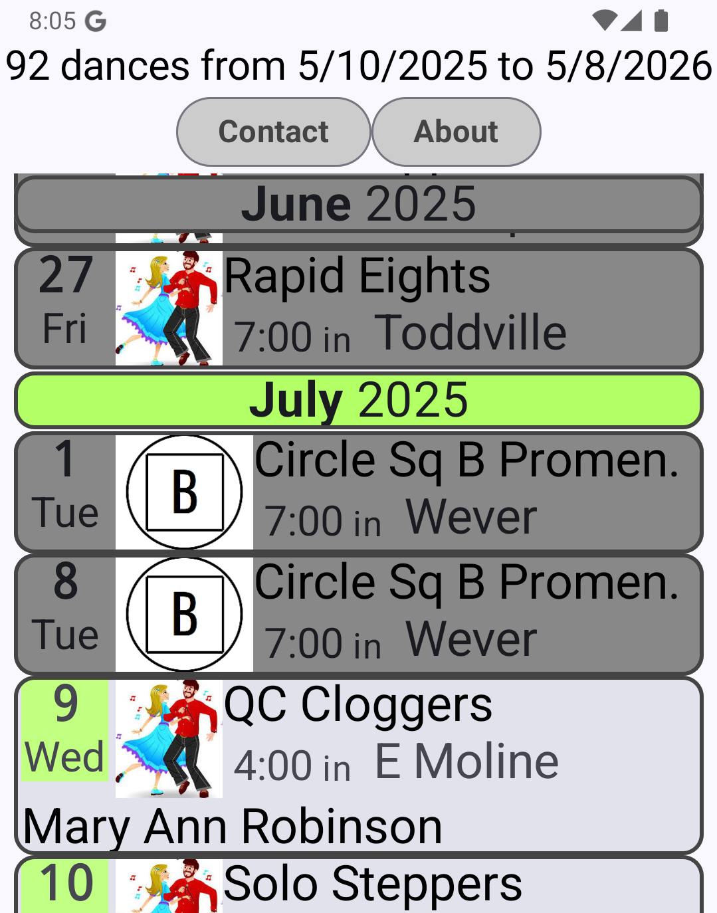
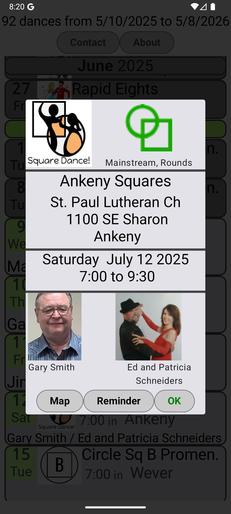

This is how to install the Android phone app containing a list of square dances in Iowa. The main schedule screen looks like this...
You may attempt download and installation without reading the instructions below BUT expect a request to permit app installation "unknown sources". Recommendation: give permission but once the schedule app is working, return to settings and turn the permissions back off.
Depending on your phone, the exact screens you encounter might vary from those shown below.
After pushing the download button expect "Open with". Choose "Package installer".

By default, Android devices suppress app installation from sources outside the Android ecosystem such as the Play Store. They are characterized as "unknown". Although this is a sensible restriction for casual app searching, it gets in the way of app development by those outside that business model.
Move the slider button to the right. Note the "Drive" icon. That's the app source you are accepting.
The specific warning messages vary depending on the version of Android and the web browser you use.

If you wish to see this selection again and all similar "unknown source" permissions, find phone settings (gear icon), "Security & Privacy"", scoll down to "Install Unknown Apps".
Downloading may take a moment. Expect a request to install or update the app. (This picture shows an update request; original installation looks similar.)

Expect a prompt to open the app for the first time. Please try it. A new app icon should be on the phone's "Home" screen. Here it is with two of its neighbors:
In addition the app menu will contain this new icon. Here it is with two of its neighbors:
This is the first version of the app made available to the public. It has an important limitation: new schedule information is not sent into the app. Adding that is a goal for a future release.
This scrollable screen shows all dances known to the app. Each month has a color and each dance in that month uses that color to highlight the date and day of the week. Some dance details known to the app are not shown on this screen. Those are limited to my guess as to which are most needed by frequent dancers: which club, when, start time, town, and caller/cuer.
The app is aware of the current date and changes the background color to a darker grey of dances already held.

Some Android phones will adjust the screen to a landscape data format if you twist the phone.
Touch a dance to see all available details...

Touch the "Map" button to ask your phone to show a map to the location of the dance. An informal way to describe this would be that the app says "If there is another app present that knows what to do with latitude and longitude, here is is." If this app gets an error, it displays whatever textual directions it has instead.
Touch the "Reminder" button to ask your phone to put the dance in your personal calendar.